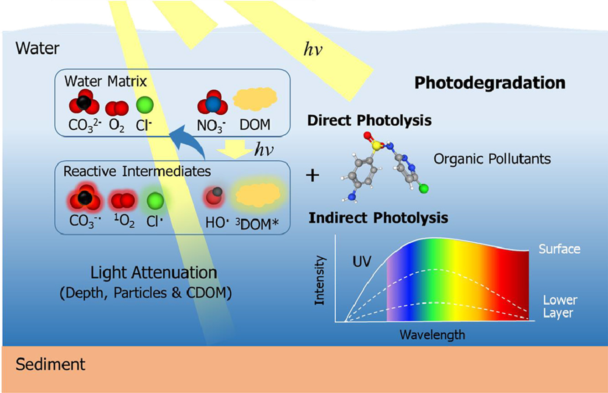

Zhongyu GUO
E-mail: zhongyuguo2019@gmail.com
Education
Supervisor: Prof. & Dr. Yoshimura Chihiro Yoshi Lab
Supervisor: Prof.& Dr. Jingwen Chen Jingwen CHEN Lab
Research
Source: Guo Z.Y. et al. Water Res. 231, 118236.
Research Field: Environmental Photochemistry
Modeling quantum yield of photo-production of reactive intermediates in freshwater environment
Over 140,000 kinds of chemicals are in use in human daily life leading to these chemicals entering the environmental water bodies inevitably. Although many of them are present at a low concentration, some of them raise considerable toxicological concerns. Thus, it is essential to investigate their fate for the ecological risk assessment. Photodegradation is proved to be an important pathway for attenuations of organic micropollutants (OMPs) in sunlit surface waters. OMPs can be removed through indirect photodegradation involving a variety of photochemically produced reactive intermediates (PPRIs) such as excited triplet-state of dissolved organic matter (3DOM*), HO·, singlet oxygen (1O2) and so on.
Photochemical reactivity (ability to produce PPRIs) varied from water bodies mainly due to different composition of dissolved constituents (i.e., DOM). Since multifarious OMPs were detected in reservoir, it is essential to investigate the photochemical reactivity of the reservoir and its effect on photodegradation of OMPs. On the other hand, some photochemistry parameters such as steady-state concentration ([PPRI]ss), and quantum yield (ФPPRI) of PPRIs have relation with optical parameters such as dissolved organic carbon (DOC), spectra slope ratio, and so on which can be easily determined. These relationships are vital for construction of OMPs photodegradation rate prediction model and further sound management of chemicals. However, the relationship has been rarely studied for reservoirs. Moreover, the currently observed relationships bear big error indicating further studies with larger database are needed.
Talks
The 38th symposium and annual conference of Japanese Humic Substances Society.
Title: Modeling Quantum Yield for Photo-production of Reactive Intermediates in Reservoirs in Japan.
The 24th Japan Society on Water Environment conference
Title: Photochemistry of Dissolved Organic Matter Extracted from Coastal Seawater: Excited Triplet-States and Contents of Phenolic Moieties.
The 41st International Symposium on Halogenated Persistent Organic Pollutants, Control Strategies and Technologies.
Title: Photochemistry of Dissolved Organic Matter Extracted from Coastal Seawater: Excited Triplet-States and Contents of Phenolic Moieties.
Publications
- Guo, Z.Y., Wang, T.T., Chen, G., Wang, J.Q., Fujii, M., Yoshimura, C.* (2023) Apparent Quantum Yield for Photo-Production of Singlet Oxygen in Reservoirs and Its Relation to the Water Matrix. Submitted to Environ. Sci. & Technol. (under review)
- Guo, Z.Y., Hatakeyama, T., Yoshimura, C.*, Wang, T.T., Hatano., Y., 2022. Relationship between Influent Sewage Quality and Sewershed Characteristics in Tokyo City. Journal of Water and Health. 20, 972-983. https://doi.org/10.2166/wh.2022.022
- Guo, Z.Y., Kodikara, D., Albi, L.S., Hatano, Y., Chen, G., Yoshimura, C., Wang, J.Q.*, 2022. Photodegradation of Organic Micropollutants in Aquatic Environment: Importance, Factors and Processes. Water Res. 231, 118236. https://doi.org/10.1016/j.watres.2022.118236
- Guo, Z.Y., Wang, J.Q., Chen, X., Cui, F.F., Wang, T.T., Zhou, C.Z., Song, G.B., Zhang, S.Y., Chen, J.W.*, 2021. Photochemistry of dissolved organic matter extracted from coastal seawater: Excited triplet-states and contents of phenolic moieties. Water Res. 188: 116568. https://doi.org/10.1016/j.watres.2020.116568
- Guo, Z.Y., Chen, J.W.*, Zhang, S.Y., Chen, X., Wang, J.Q., Cui, F.F., 2020. Effects of dissolved organic matter on photochemical transformation of organic micropollutants in natural waters (in Chinese). Chin. Sci. Bull. 65, (26): 2786-2803 https://doi.org/10.1360/TB-2020-0791
- Wang, J.Q., Wang, K. Zhang, L.L. Guo, Y.C. Guo, Z.Y., Sun, W., Ye, Z.M. Niu, J.F., 2021. Mechanism of bicarbonate enhancing the photodegradation of β-blockers in natural waters. Water Res. 197: 117078. https://doi.org/10.1016/j.watres.2021.117078
- Wang, J.Q., Wang, K., Guo, Y.C., Ye, Z.M., Guo, Z.Y., Lei, Y., Yang, X. Niu, J.F., 2021. Dichlorine radicals (Cl2•-) promote the photodegradation of propranolol in estuarine and coastal waters. Journal of Hazardous materials. J. Hazar. Mater. 414: 125536. https://doi.org/10.1016/j.jhazmat.2021.125536
- Wang, J.Q., Chen, J.W., Qiao, X.L., Zhang, Y.N., Uddin, M., Guo, Z.Y., 2019. Disparate effects of DOM extracted from coastal seawaters and freshwaters on photodegradation of 2,4-Dihydroxybenzophenone. Water Res. 151: 280-287. https://doi.org/10.1016/j.watres.2018.12.045
- Chen, G., Guo, Z.Y., Yoshimura, C*. (2023) Integration of Photodegradation Process of Organic Micropollutants to a Vertically One-Dimensional Lake Model. Sustainability. 15, 2082. DOI: https://doi.org/10.3390/su15032082
- Hatano, Y., Wang, M.N., Guo, Z.Y., Yoshimura, C.*, (2023) Effect of dissolved organic matter property on the regrowth of Escherichia coli after ultraviolet disinfection. J. Water Process. Eng. 51, 103383. https://doi.org/10.1016/j.jwpe.2022.103383
- Guo, Y.C., Guo, Z.Y. , Wang, T.T., Zhang, L.L., Yu, P.F., Gu, W.W., Yang, S.X., Yao, K.W., Niu, J.F. Wang, J.Q.* (2023). Photochemical Degradation Mechanisms and Ecotoxicity of Propranolol in Natural Water under Simulated and Natural Sunlight Irradiation. Sep. Purif. Technol. https://doi.org/10.1016/j.seppur.2023.123867
- Albi, L.S., Guo, Z.Y., Chen, G., Yoshimura, C.*, (2022) Potential effect of atmospheric condition on incident light and photo-production of reactive intermediates in freshwater systems. Environmental Advances. 11, 100346. DOI: https://doi.org/10.1016/j.envadv.2023.100346 https://doi.org/10.1016/j.envadv.2023.100346
- Guo, Y.C., Guo, Z.Y., Zhang, L.L., Yoshimura, C., Ye, Z.M., Yu, P.F., Qian, Y., Hatano, Y., Wang, J.Q.*, Niu., J.F., 2022. Photodegradation of Propranolol in Surface Waters: An Important Role of Carbonate Radical and Enhancing Toxicity Phenomenon. Chemosphere. 297, 134106. https://doi.org/10.1016/j.chemosphere.2022.134106
- Zhou, Y.F., Zhao, K., Amin, M.A., Fang, C., Guo, Z.Y., Yoshimura, C., Niu, J.F.*, 2022. Elucidating the role of phosphorus doping in Co and Ni-loaded carbon nitride photocatalysts for nefazodone degradation. Environ. Funct. Mater. 1, 114-120. https://doi.org/10.1016/j.efmat.2022.05.001
- Guo, Y.C., Guo, Z.Y., Wang, J.Q.*, Ye, Z.M., Zhang, L.L,. Niu., J.F., 2021. Photodegradation of three antidepressants in natural waters: Important roles of dissolved organic matter and nitrate. Sci. Total. Environ. 802: 149825. https://doi.org/10.1016/j.scitotenv.2021.149825
- Ye, Z.M., Guo, Z.Y., Wang, J.Q. Zhang, L.L. Guo, Y.C. Niu, J.F., Yoshimura, C., 2021. Photodegradation of acebutolol in natural waters: important roles of carbonate radical and hydroxyl radical. Chemosphere. 287, 132318. https://doi.org/10.1016/j.chemosphere.2021.132318
Awards
Photochemistry of Dissolved Organic Matter Extracted from Coastal Seawater: Excited Triplet-States and Contents of Phenolic Moieties.
The 41st International Symposium on Halogenated Persistent Organic Pollutants, Control Strategies and Technologies.